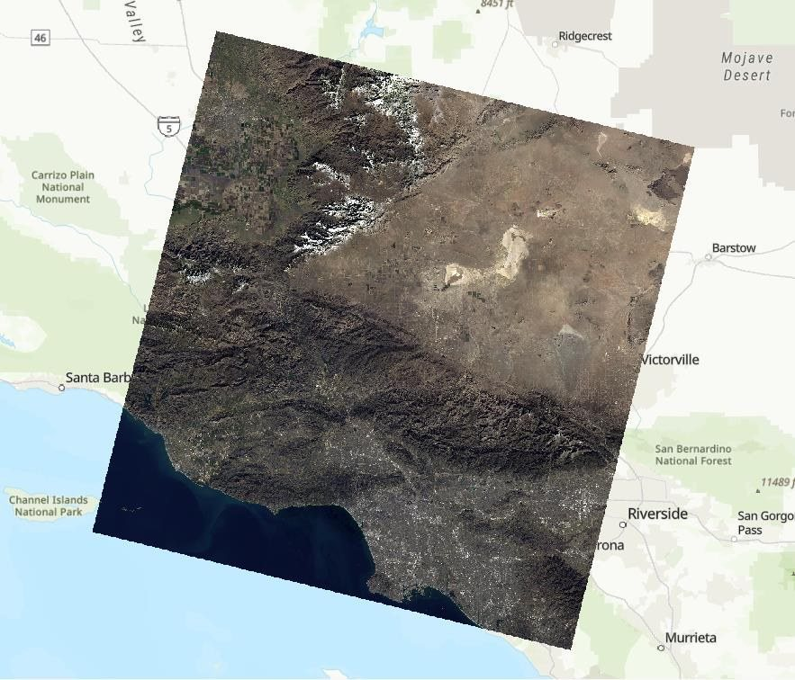

Remote Sensing & Earth ObservationFig. 1 Landsat 9 scene over Los Angeles, 12 January 2024
Landsat 9 & Thermal Image Analysis
Image analysis of a Landsat 9 scene of Los Angeles (12 January 2024) and thermal interpretation of Landsat TM Band 6 over Rome and airborne thermal imagery of Ann Arbor.
- Location
- Los Angeles, Rome and Ann Arbor
- Year
- 2024
- Client
- Practice study
- Tools
- Landsat 9, Landsat TM, Airborne thermal scanner, ENVI


Challenge
Interpret multispectral and thermal imagery correctly: what different band combinations and thermal values reveal about urban surfaces.
Approach
- True-colour (4-3-2) and false-colour SWIR composite (7-6-4) to highlight urban areas
- Image dimension and band review, and subsetting to the area of interest
- Interpretation of thermal digital numbers for roads, rivers, vegetation and buildings
Results
- The 7-6-4 composite shows urban areas in pink and magenta, clearly separated from natural land
- In early-morning thermal imagery, roads and rivers appear warmer than vegetation
Practice study: course and client details omitted.